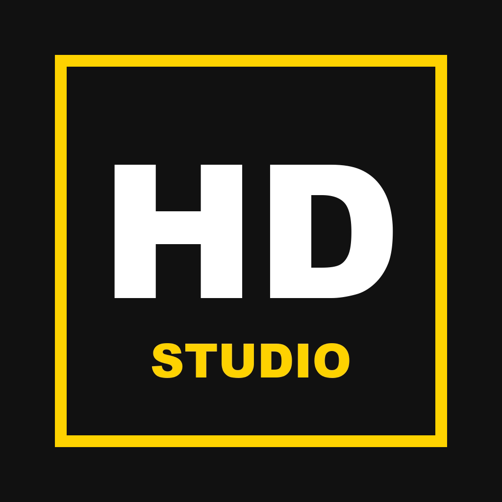

Home · Terms of Service · Privacy Policy
Highlight Desk Studio is a private desktop tool used by the creator behind the TikTok account @thehighlightdesking. It edits short vertical video clips (captions, titles) on the creator's own computer and sends finished clips to the creator's own TikTok account as drafts.
The creator then reviews each draft in the TikTok app, sets the caption, privacy and disclosure settings, and decides whether to post it. The tool never posts anything without the creator's review.
The tool is used only with the creator's own account. It is not offered to other users.
Contact: fabianfjt@gmail.com